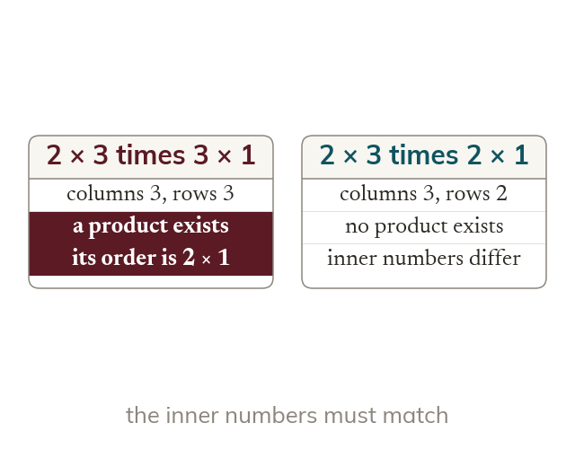

Which products exist
A matrix's order is rows × columns. Two matrices multiply only when the first's columns match the second's rows. The product takes the first's rows and the second's columns.
A matrix is described by its order, rows x columns, and two matrices can be multiplied only when the first has as many columns as the second has rows. The product then takes the rows of the first and the columns of the second.